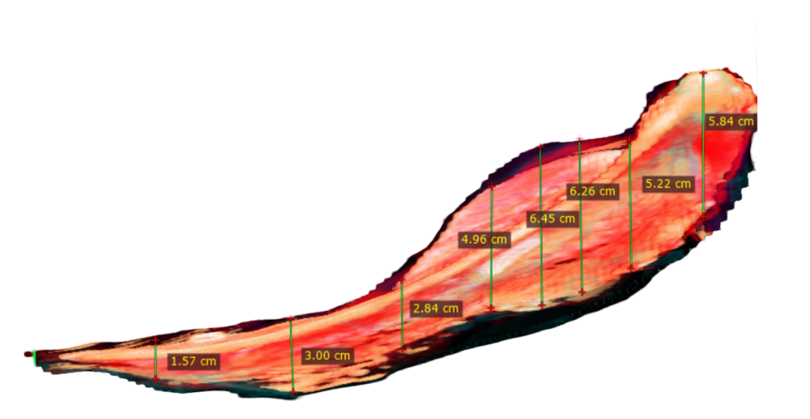
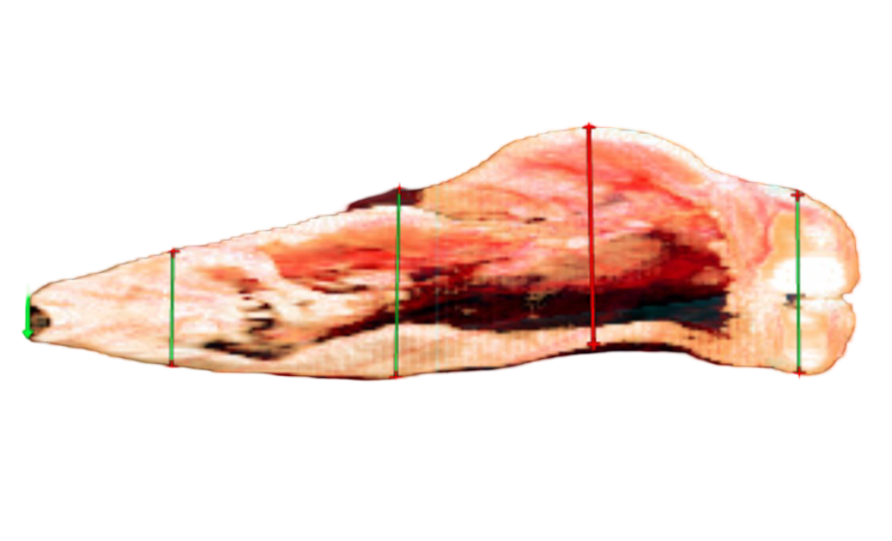

mm-outline - fish swimbladder detector
Input parameters:
Swimbladder length [m]:
Number of outline points:
Despiking window [px]:
Despiking threshold [px]:
Gaussian sigma [px]:
Gaussian radius [px]:
Input Files:

zh-image file:

yw-image file:
Output outline: